Ergonomics stories, now split into clear, usable subpages.
This library now keeps much more of the original research language while making each topic easier to read, easier to scan, and easier to revisit with strong imagery and dedicated story pages.
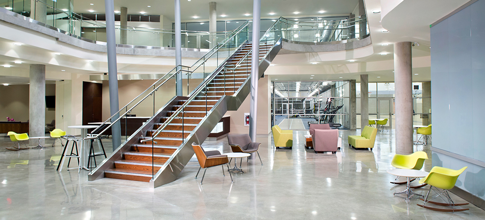
Living Well
An environment where athletes and employees can thrive, built around care, performance, and collaboration.
Open storyEighteen focused readings, each with its own page, imagery, and reading rhythm.
Use the filters to reduce clutter quickly. Every card opens a dedicated subpage with richer text, key points, and image-based reading breaks.
Living Well
How Fortius built an athlete-centred environment that treats health as performance for life.
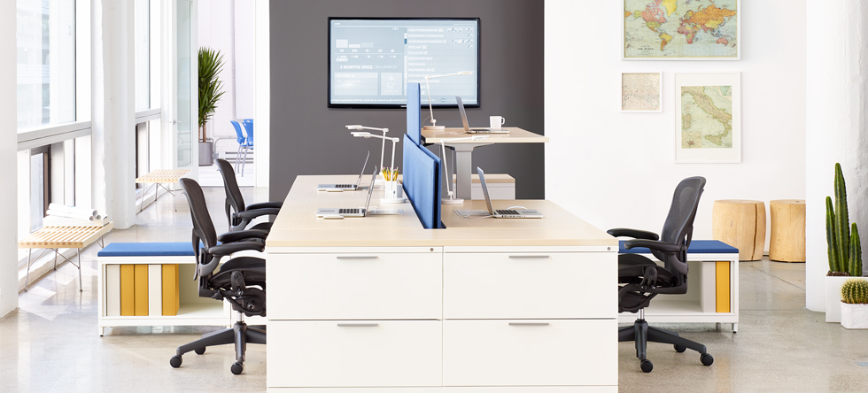
Sit. Stand. Move. Repeat.
Why postural variety beats sitting all day and standing all day.
Supporting the Spine When Seated
The anatomy, dynamic support, and research logic behind Mirra 2.

All Together Now
Why surroundings, furnishings, and tools must finally start working together.
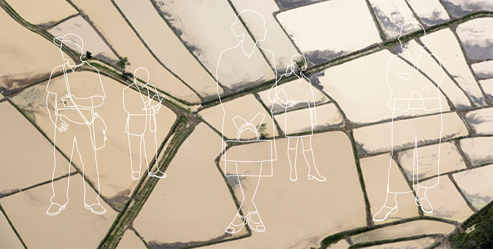
The Evolution of Anthropometrics and User Control
From average sizing to responsive fit for real people and real work postures.
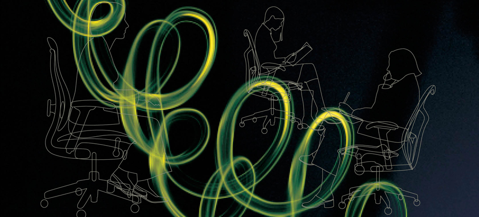
Supporting the Biomechanics of Movement
How tilt kinematics can mirror the body instead of forcing it to adapt.
The Art and Science of Pressure Distribution
Why topographically neutral support matters more than simple padding.
The Attributes of Thermal Comfort
How breathable materials keep seated work from becoming hot, sticky, and fatiguing.
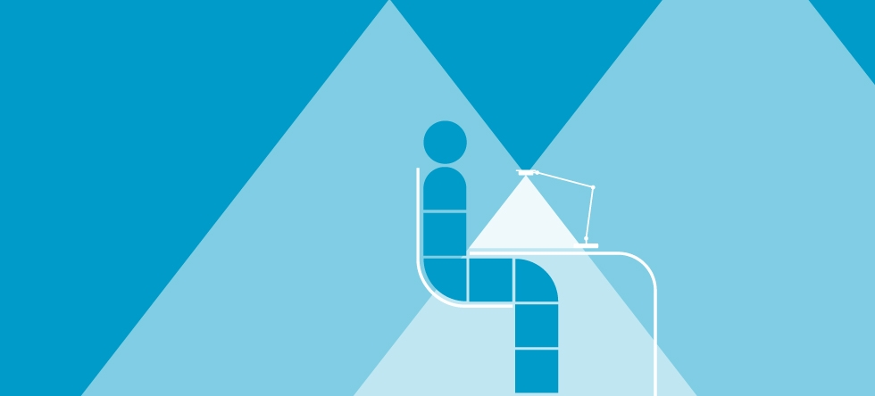
The Case for Task Lighting
Why individual lighting control saves energy, reduces strain, and supports posture.
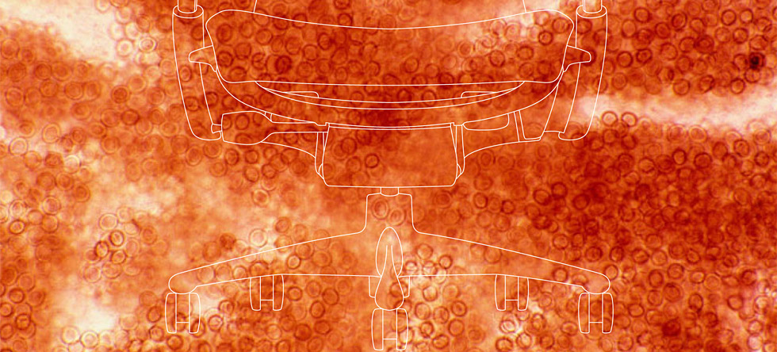
Sitting Can Be Good for the Circulatory System
How Embody was studied for lower heart rate during office work.
Seeing Double
The productivity gains and posture risks that come with dual and triple displays.
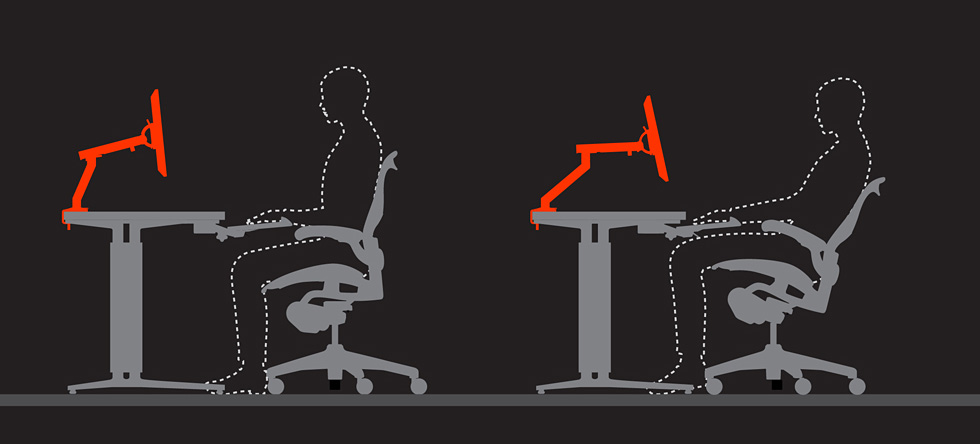
The Eyes Always Win
Why adjustable monitor arms are almost as important as the chair itself.
Maintaining Concordance as Seated Postures Change
How Envelop keeps chair, desk, and technology aligned as posture changes.
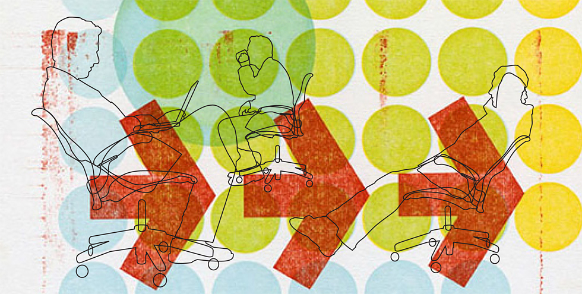
The Kinematics of Sitting
Why the chair should follow the body's linkages instead of the reverse.
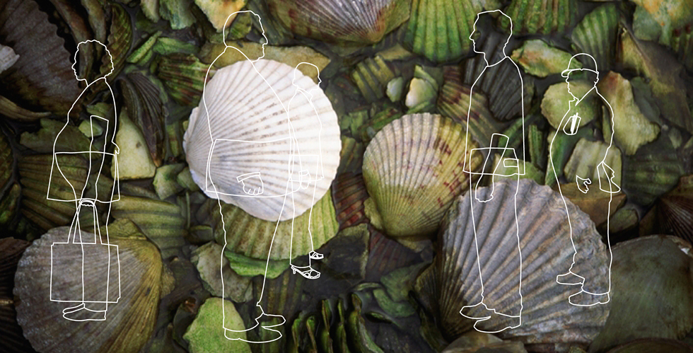
The Anthropometrics of Fit
Why real fit starts by designing beyond the mythical average user.
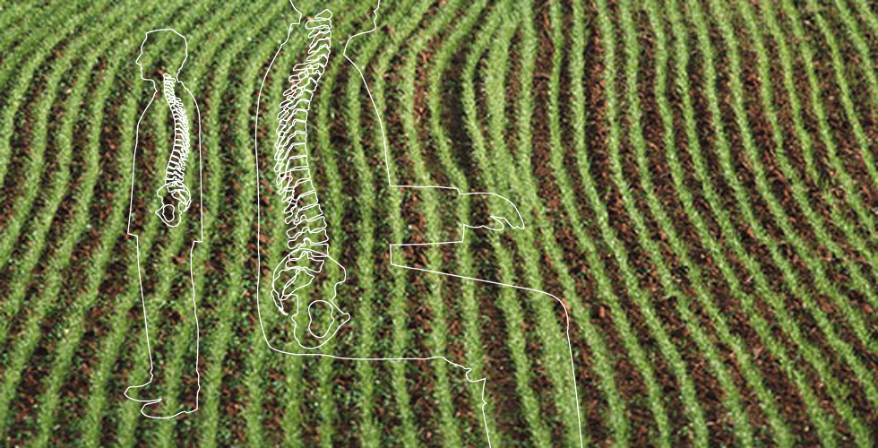
The Benefits of Pelvic Stabilization
Why sacral-pelvic support matters in upright computer work.
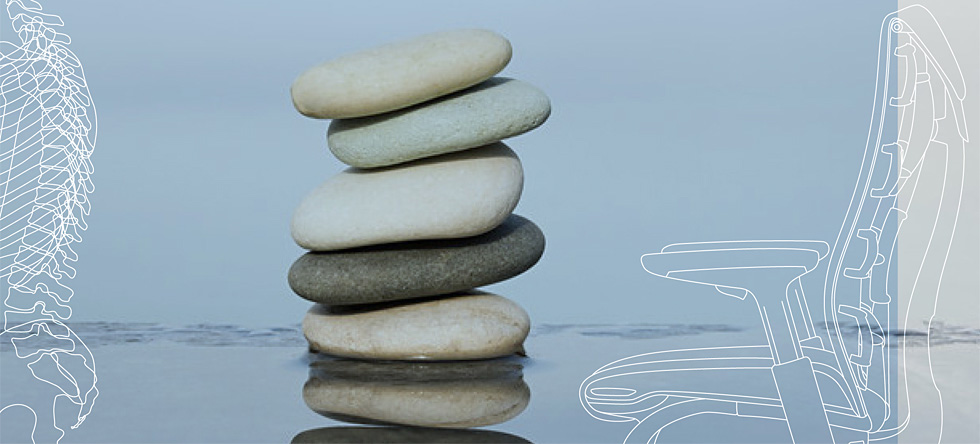
Promoting Healthy Movement and Natural Alignment
How Embody supports equilibrium across upright and reclined work.
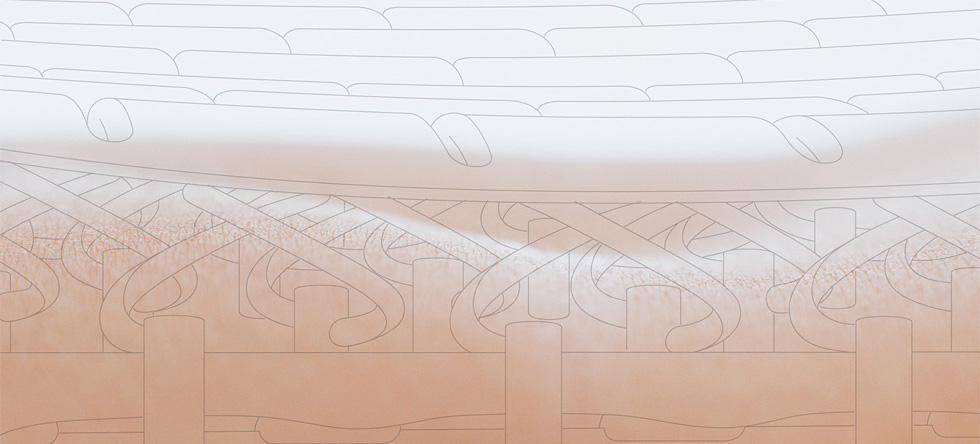
Improving Oxygen Flow While Seated
How a dynamic seat supports tissue perfusion and longer focused work.
Living Well
A healthcare and performance case study about designing a centre where athletes, staff, and clients can all thrive.
Read this article